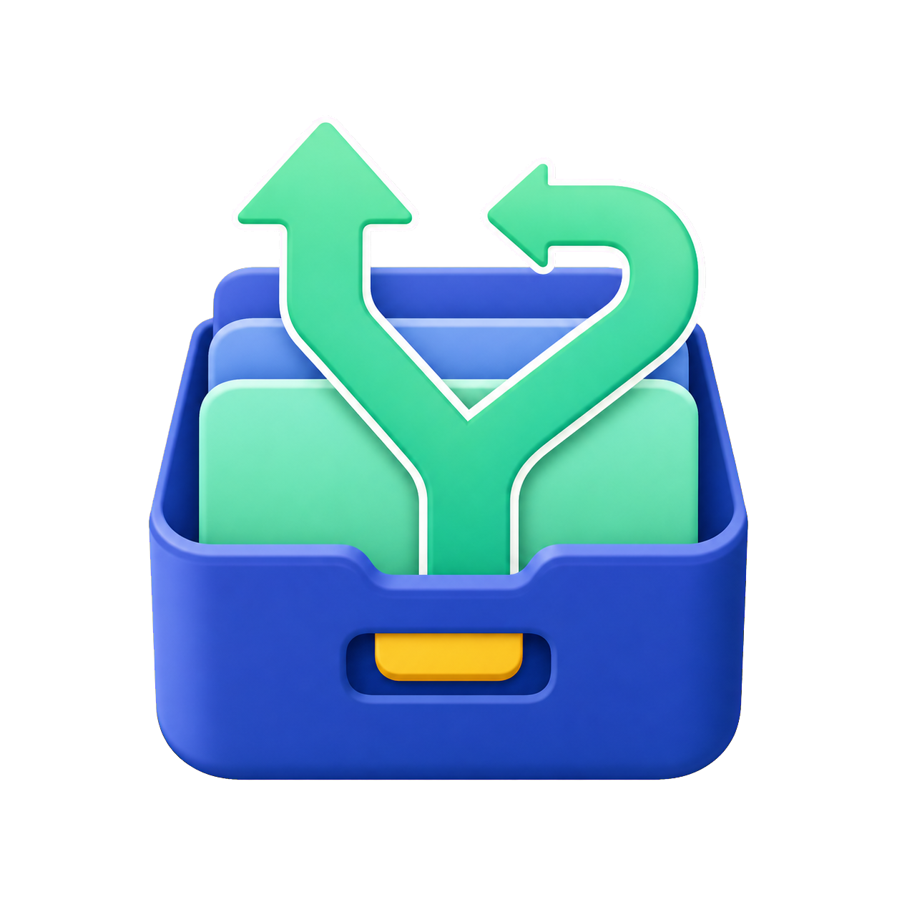

Y-TEC Data Capsule
User Manual
From creating a backup to validating it on the new PC
1.2.0 republish (self-signed) / Manual revised September 29, 20261. Before you begin
- Technical targets are Windows 7 SP1, 8, 8.1, 10, and 11 with .NET Framework 4.6.1 or later. The AnyCPU build supports 32-bit and 64-bit Windows; Windows 11 has no 32-bit OS edition.
- Extract the ZIP to a folder and double-click
Y-TEC Data Capsule.exe. Keep the EXE with its DLLs, catalog, and manual folders. - The app requests administrator privileges automatically. Check the source, then approve the Windows UAC prompt. You do not need to right-click “Run as administrator” every time.
- The republished 1.2.0 EXE and bundled DLLs use Y-TEC self-signing. This is not a signature trusted by Microsoft or a commercial CA, and Windows or SmartScreen may display warnings. Check the official download source and published SHA-256 values. No public certificate is installed automatically.
- The app performs no network communication, cloud synchronization, or analytics. It does not download online-only OneDrive or iCloud content.
Technical compatibility with older Windows and .NET Framework 4.6.1 does not imply current Microsoft servicing. Older OS compatibility refers to historical tests, not a new test of every OS for this republication.
2. Three startup modes
Save documents, photos, bookmarks, mail, address books, accounting data, MobileSync, Wi-Fi profiles, and more.
Register profiles encrypted by Data Capsule on another Windows PC.
Restore only Chrome, Edge, or Firefox bookmarks.
3. Create a data backup
Only internal or USB drives with a root-level
Windows folder appear. Select “Scan Again” after connecting a USB drive.Choose the parent folder where a new backup folder will be created, such as an external SSD. A location inside the source Windows drive is not allowed.
For example,
20260728-Full-Backup. If the same file or folder name already exists, choose another name.Use Select All, Clear All, a group checkbox, or individual item checkboxes. Expand the arrow beside a group to show its items.
Check the file count, planned size, warnings, and final output path. If cloud placeholders were found, review the skipped count and displayed logical size. Review again after changing any setting.
Read the confirmation first. When backing up current browser bookmarks, the target browsers close automatically. Save unfinished form input before continuing.
backup-manifest.v1.json for copied files, failures, warnings, and ACL results. Never disconnect the destination while copying.4. Backup items and output
Ordinary files are placed under data; Wi-Fi settings are placed under windows-settings. Source-relative paths are preserved so each source user remains identifiable.
| Group | Scope and notes |
|---|---|
| Basic data | Desktop, Documents, Downloads, Pictures, Music, and Videos. Only files fully available on the PC are copied from OneDrive, iCloud, and similar locations. |
| Browsers | IE, Chrome, Edge, and Firefox bookmarks only. Passwords, cookies, history, and sessions are excluded. |
| Thunderbird, Outlook data, and Windows Mail data. VSS is attempted for files in use; a warning is recorded when a file still cannot be read. | |
| Device data | iPhone and iPad MobileSync in both AppData and the user-profile Store-app location. |
| Windows settings | Wi-Fi profiles from the PC running Data Capsule, encrypted for transfer to another PC. |
| Postcard software | Personal and Public / All Users address-book candidates are searched separately and organized by product. See section 8. |
| Accounting software | Yayoi Accounting / Yayoi Blue Return and FreeWay Accounting candidates. Always prioritize the official product backup. |
Example output paths
E:\20260728-Full-Backup\data\Users\OldUser\DocumentsE:\20260728-Full-Backup\data\年賀状ソフト\筆王E:\20260728-Full-Backup\data\年賀状ソフト\共有住所録\筆ぐるめE:\20260728-Full-Backup\data\会計ソフト\弥生会計・やよいの青色申告E:\20260728-Full-Backup\windows-settings\wifi
5. General manual migration and restore
Except for Wi-Fi profiles and browser bookmarks, Data Capsule does not inject data into destination applications. Use this order:
- Preserve the backup root: Keep the top-level folder containing
backup-manifest.v1.jsonunchanged until the migration is fully validated. - Install the destination application first: Prefer the same version as the source, or a compatible version documented by the vendor. Launch it once so it creates its folders.
- Exit the application: Never replace files while the application or its tray process is using them.
- Protect destination data: Rename or copy the current destination folder so that you can roll back.
- Copy or import only what is needed: Copy from
data\Users\OldUserinto the current user's destination. Use Copy, not Move. - Validate in the application: Check files, counts, dates, years, and accounts. Do not erase the old PC or backup until validation succeeds.
Common destinations for basic data
| Path inside the backup | Usual destination |
|---|---|
data\Users\OldUser\Desktop | The current user's Desktop |
...\Documents | The current user's Documents |
...\Pictures | The current user's Pictures |
...\Downloads | The current user's Downloads. Recheck the source of executable files before opening them. |
6. Thunderbird
What is and is not backed up
| Included | Excluded |
|---|---|
| Message stores, POP and Local Folders, local IMAP data, account settings, address books, filters, calendars, add-ons, and other profile data. | Known saved-password databases, key databases, cookies, and session or crash-recovery files, including logins.json, key3.db, key4.db, signons*, cookies.sqlite*, and common session/recovery files. |
Recommended: use Thunderbird's import tool
- Install Thunderbird on the destination PC, preferably the same or a newer stable version.
- Locate
data\Users\OldUser\AppData\Roaming\Thunderbird\Profiles\ProfileName. Older Windows layouts may useApplication Data\Thunderbird\Profiles. - In Thunderbird, open Menu (≡) > Tools > Import.
- Choose Import from another Thunderbird installation, then choose the profile folder found in step 2.
- Select the account settings, messages, address books, and other required items, then start the import.
- After restart, check message counts, Local Folders, and address books, and re-enter requested passwords.
Mozilla documents a 2 GB limit for importing a ZIP. Data Capsule does not create a Thunderbird ZIP, so choose the profile folder directly for large profiles.
Alternative: replace the Thunderbird folder
- Launch Thunderbird once on the destination PC, then exit it completely.
- Open
%APPDATA%and rename the currentThunderbirdfolder to a rollback name such asThunderbird.before-restore. - Copy the backed-up
AppData\Roaming\Thunderbirdfolder into the destination%APPDATA%. - Start Thunderbird and validate it. If it fails, restore the renamed folder and use the import tool instead.
7. iPhone / iPad (MobileSync)
Locations saved by Data Capsule
- Desktop iTunes:
data\Users\OldUser\AppData\Roaming\Apple Computer\MobileSync - Microsoft Store iTunes / Apple Devices:
data\Users\OldUser\Apple\MobileSync
Both are saved when both exist. The actual device backups are long alphanumeric folders under each MobileSync\Backup. Do not rename these folders or edit their contents.
Make the destination recognize and restore the backup
- Install and update Apple Devices or the intended version of iTunes on the destination PC.
- Launch it once. In Apple Devices, use General > Manage Backups > Show in Explorer to identify the actual destination
Backupfolder. - Exit Apple Devices or iTunes completely.
- Copy the per-device folders from the backed-up
MobileSync\Backupinto the destinationMobileSync\Backup. If a name already exists, back up the destination copy first; do not merge blindly. - Open the app and confirm the device and date under Manage Backups, or in iTunes under Edit > Preferences > Devices.
- Connect the iPhone or iPad and approve “Trust This Computer” on the device.
- Choose Restore Backup under General in Apple Devices, or under Summary in iTunes, and select the intended backup.
If the backup is missing from the list, check the destination layout, make sure it is not nested as Backup\Backup, and confirm that the per-device folder name and contents were not changed.
8. Postcard and address-book software
Data Capsule classifies candidate address books for the following Japanese postcard products, keeping personal and shared candidates separate. Selecting the entire Postcard Software group includes both items.
| Backup item | Locations searched | Output |
|---|---|---|
| Postcard and address-book data | Each user's Documents / My Documents / Desktop | data\年賀状ソフト\ProductName |
| Shared postcard address-book data | Users\Public\Documents, Users\Public\Desktop, and older All Users equivalents | data\年賀状ソフト\共有住所録\ProductName |
.FGA address book under Public\Documents\みんなの筆ぐるめ is stored under data\年賀状ソフト\共有住所録\筆ぐるめ, separate from personal data.Supported products and principal candidates
| Product | Principal candidate |
|---|---|
| Fudeoh (筆王) | .FZD |
| Fudegurume (筆ぐるめ) | .FGA |
| Fudemame (筆まめ) | .FWA / .FWB / .SDL |
| Rakuraku Hagaki (楽々はがき) | .JSR |
| Atena Shokunin (宛名職人) | .ATA |
| Fudeyasume (筆休め) | .FYA |
| Hagaki Studio (はがきスタジオ) | .HSA / .HSD |
| Hagaki Sakka (はがき作家) | .HWA / .HWC / .HWL |
| Hagaki Design Kit (はがきデザインキット) | Candidate user-data folders |
Migration and restore
- Install a compatible edition of the same product on the destination PC.
- Use the vendor's Open Address Book, Import Another Format, or Restore Backup command.
- Choose personal files under
data\年賀状ソフト\ProductNameor shared files underdata\年賀状ソフト\共有住所録\ProductName. - Validate names, postal codes, addresses, and record counts. Always preview before printing.
9. Accounting software
Current automatic targets
- Yayoi Accounting / Yayoi Blue Return: candidate business data under Documents
- FreeWay Accounting:
KAIKEI_Kat the root of the selected Windows drive
Migration and restore
- On the source PC, use the accounting product's official procedure to create a backup.
- Use Data Capsule's accounting item only as an additional copy beside that official backup.
- Install a compatible edition of the accounting product on the destination PC.
- Restore the official backup first through the product's Restore Backup or Open Business Data command.
- If the Data Capsule copy is needed, copy from
data\会計ソフト\ProductNameto the vendor-specified location and select it through the product's Open command. - Compare the business name, fiscal year, opening and closing periods, balances, and journal-entry count.
Products such as PCA Accounting and Blue Return A that require a dedicated in-product backup are intentionally not automatic targets. Use only their official backup and restore procedures.
10. Restore Wi-Fi profiles
- Select Restore Wi-Fi Profiles on the startup screen.
- Select the top-level backup folder, for example
E:\20260728-Full-Backup. - The app locates
windows-settings\wifi\wifi-profiles.ywbwifiautomatically. - Review the warning, then select Restore Wi-Fi Profiles.
- Confirm that Windows can connect to the intended network.
11. Restore browser bookmarks
- Select Restore Browser Bookmarks on the startup screen.
- Select the top-level backup folder. The app locates supported bookmark files automatically.
- Select the source backup user and browser profile.
- Save unfinished form input before starting. The target browser is asked to exit; remaining background processes are terminated.
- For Chrome or Edge, confirm the destination profile. The current
BookmarksandBookmarks.bakare saved to a rollback folder before replacement. - For Firefox, the app validates and locates the backup. In Firefox use Manage Bookmarks > Import and Backup > Restore > Choose File.
- Start the browser and confirm the bookmark bar and folder structure.
12. Storage formats, access control, and rights
| Destination | Behavior |
|---|---|
| NTFS / ReFS | After completion, only the new backup output from the current run receives owner Everyone and inheritable full control. Source owners and ACLs are unchanged. |
| exFAT | Backup is allowed. exFAT cannot store Windows owners or ACLs, so Everyone ACL processing is skipped. |
| FAT32 | Rejected before copying because of restrictions such as the 4 GB single-file limit. |
Rights and license
- Y-TEC-owned code, documentation, icon artwork, and screenshots are licensed under Apache License 2.0.
- Modification, commercial use, and redistribution are permitted under that license. Retain the license, NOTICE, and third-party notices.
- See
LICENSE.txt,NOTICE,BRAND_POLICY.md,ASSET_PROVENANCE.md, andTHIRD-PARTY-NOTICES.txt. Modified builds must not imply Y-TEC approval or official status. - Product names, company names, and trademarks belong to their respective owners. Data Capsule is not an official product of any listed software vendor.
13. Troubleshooting
| Symptom | What to check |
|---|---|
| The source drive does not appear | Confirm a root-level Windows folder and a recognized USB connection, then select Scan Again. |
| Backup cannot start | Check administrator privileges, the new folder name, existing names, free space, destination format, and whether the plan was reviewed again. |
| Wi-Fi or bookmarks are not found | Select the top-level folder containing backup-manifest.v1.json, not an internal data folder. |
| A browser cannot close | Save unfinished work, close the browser and its background tray process manually, then retry. |
| Thunderbird import fails | Select the actual Profiles\ProfileName, use the same or a newer Thunderbird version, or restore the rollback made before folder replacement. |
| MobileSync is missing | Use Manage Backups to open the real destination and check for accidental Backup\Backup nesting or changed folder names. |
| OneDrive / iCloud file count is low | Online-only files are intentionally skipped. Download only required source files and create a new backup, or sync them on the destination PC. |
| Some files failed | Review warnings in backup-manifest.v1.json, exit the relevant app, and retry with a new backup folder name. |
| The manual does not open | Extract the ZIP again and keep the EXE with its folders. The PDF is in the User Manual folder. |
14. Official downloads and contact
Product page and downloads: https://ytec.cloudfree.jp/forge/en/projects/data-capsule/
Contact: https://ytec.cloudfree.jp/forge/contact/
For an update, obtain a new ZIP from the official product page and extract it to a separate folder. Keep your existing backups and do not erase data on the original PC.
Include the app version, Windows version, steps, and a summary of the error when contacting Y-TEC. Do not send real backups, personal data, Wi-Fi SSIDs or passwords, or credentials. Opening the links above requires internet access.